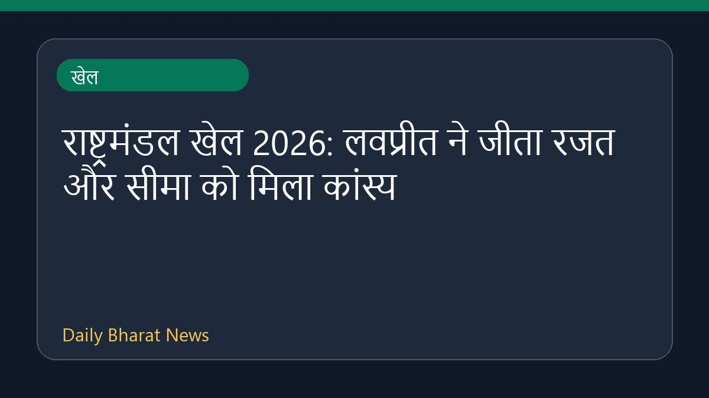

राष्ट्रमंडल खेल 2026: लवप्रीत ने जीता रजत और सीमा को मिला कांस्य

ग्लासगो में चल रहे राष्ट्रमंडल खेल 2026 के आठवें दिन भारत के पदकों में और इजाफा हुआ है। भारत के भारोत्तोलक लवप्रीत सिंह ने शानदार प्रदर्शन करते हुए रजत पदक अपने नाम किया। वहीं दूसरी ओर, सीमा ने चक्का फेंक यानी डिस्कस थ्रो स्पर्धा में कांस्य पदक हासिल किया। इस दिन के मुकाबलों के बाद पदक तालिका में भारत फिसलकर दसवें स्थान पर पहुंच गया है। भारोत्तोलन स्पर्धा में भारत ने कुल आठ पदक अपने नाम किए हैं। प्रतियोगिता से जुड़े अन्य विवरण सीमित रूप में उपलब्ध हैं।